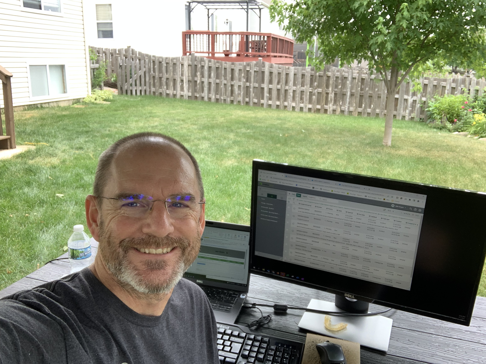
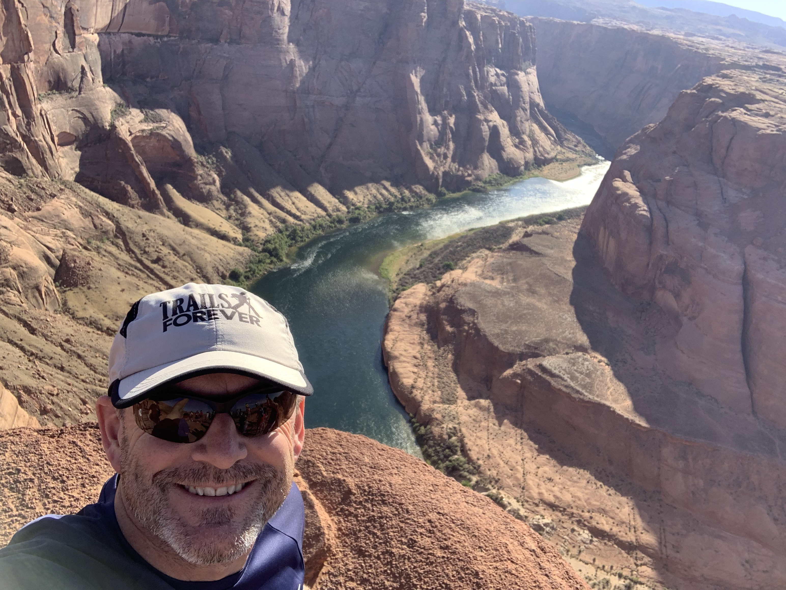
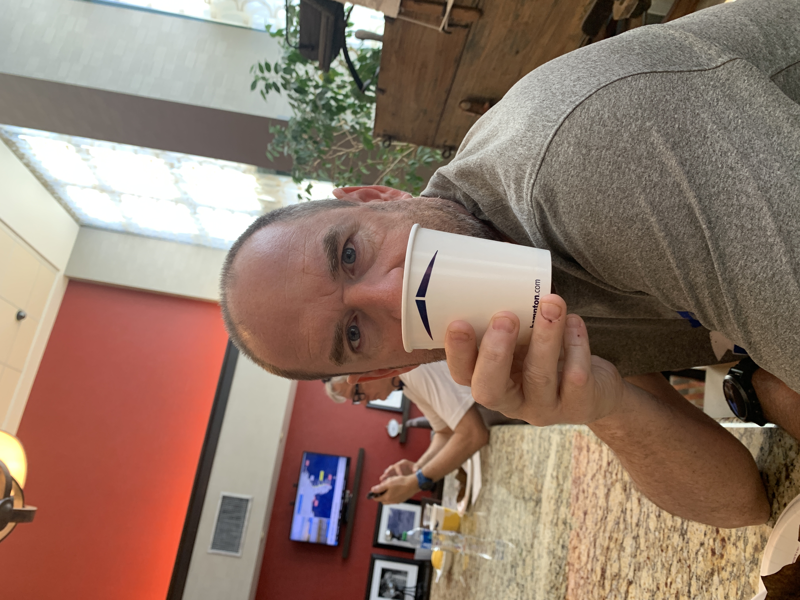
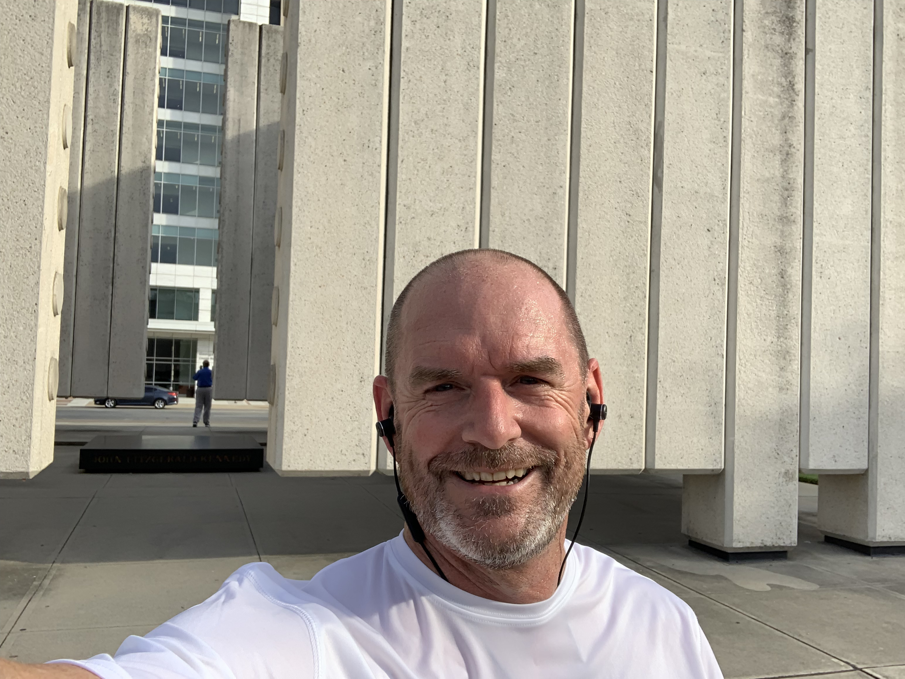

The Keyzer Family
I like quite a bit of stuff, but I’ll do whatever I can to spend as much time with the family as possible. I especially enjoy photography. Here of some of the tools, I use to pursue this interest (list of all camera parts and accessories). I am currently working on a photo library, which will be set up soon! I have been in the IT field since I graduated from college back in the day and enjoy developing and solving problems. To take my mind off work, I tend to get outside and go on runs around town. My most memorable run was a trip around Lake Geneva.
- Canon 5D Mark IV
- Canon EF 70-200mm f/2.8L IS II USM Lens
- Canon EF 24-105mm f/4L IS USM Lens
- Canon EF 100mm f/2.8L Macro IS USM Lens
- Canon EF 50mm f/1.8 STM Lens
- Canon EOS Rebel T1i
- Yongnuo Speedlite YN600EX-RT II (2)
- Bolt VM-160 LED Macro Ring Light
- Canon Speedlite 430 EX II
- MAGMOD Professional Flash Kit
- Canon PIXMA PRO-10
- Impact Pro Backdrop Support Kit
- Miscellaneous wireless transmitters, receivers, remotes, and brackets



